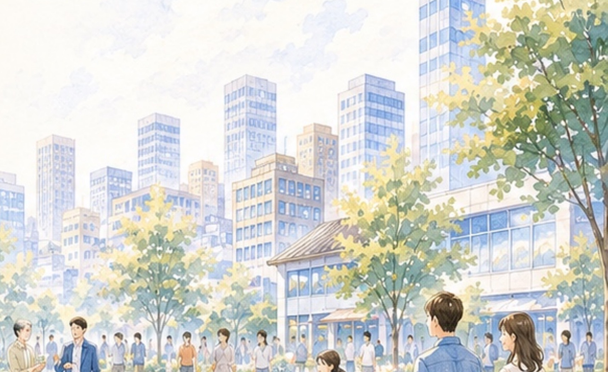
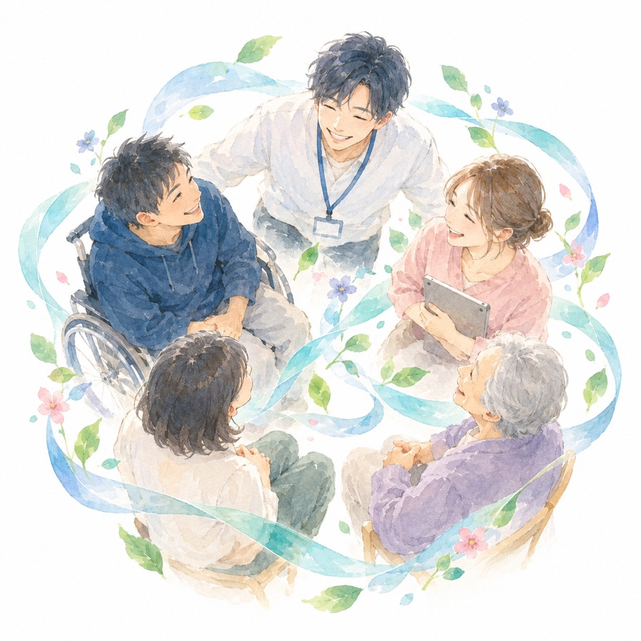
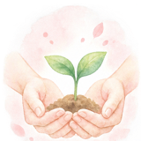
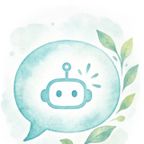
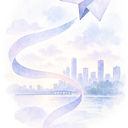
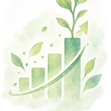

Stellize
Loading...

Issue
利用者の支援に集中したいのに、業務は煩雑で人手も足りない。
情報も分散し、つながりも生まれにくい。そんな声を、私たちは数多く聞いてきました。
もっと支援に時間を使いたいのに…
人手不足で日々の業務が回らない…
情報がバラバラで共有や連携がうまくいかない…
これらの課題を、ひとつずつ解決していくには、
「つながり」と「仕組み」が必要です。
Vision
すべての人が、自分らしく輝ける社会へ。
福祉の現場には、まだ多くの課題や制約があります。情報・ノウハウ・つながり・機会が分断されていることで、本来の支援や成長のチャンスが十分に届けられていません。
WelfareAIは、その分断をつなぎ直し、仕事・学び・相談・つながりがめぐり続ける仕組みを、福祉の新しいインフラとして届けます。
6つの価値は、それぞれが独立したものではありません。
ひとつの「できた」が、次の可能性を呼ぶ。——めぐるほどに、育っていきます。

WelfareAI 仕事・学び・相談・つながりが
利用者の可能性を見つけ、育てる
一人ひとりの「やってみたい」を大切にし、未来の選択肢を広げます。
スキルと知識をいつでも身につける
動画やコンテンツで、楽しく学び、成長を後押しします。

AIで相談・支援をもっと身近に
AIカウンセラーや業務支援で、支援の質と効率を高めます。

情報や機会を地域と未来へ
イベントやお知らせを通じて、つながりと挑戦の機会を広げます。
人・地域・企業をつなぐハブに
多様な主体と連携し、共に支え合う地域社会をつくります。

データとAIで新しい価値を共創
データを活用し、エビデンスに基づいた新しい価値を生み出します。
そして、また次の「やってみたい」へ。
「うちの施設でも使えるだろうか」——まずは無料で、触れてみてください。
無料ではじめるFeatures
利用者一人ひとりの「やってみたい」を起点に、AIが寄り添い、学びや仕事、相談、地域とのつながりをサポート。
施設の運営や情報共有も効率化し、支援の質と成果を高める仕組みを提供します。
やってみたいを見つけ、一歩をサポート
いつでも学べる環境でスキルを身につける
自分に合った仕事や活動にチャレンジ
AIや専門スタッフにいつでも相談できる
人・地域・企業とつながり、チャンスを広げる
データとAIで支援の質を高め、成果を見える化
Model
「気づく」から「成長する」まで。仕事・学び・相談・つながりが循環することで、
支援の質と運営の効率が、同時に高まっていきます。
利用者の興味や「やってみたい」を発見します。
AIカウンセラーやスタッフに気軽に相談できます。
学習コンテンツでスキルを身につけ、自信を育みます。
生産活動やお仕事にチャレンジし、経験を積み重ねます。
地域・企業・他施設とつながり、活躍の場を広げていきます。
利用者の可能性が広がり、施設の価値向上と社会への貢献につながります。
くり返すほど、可能性が広がる
WelfareAIは、すべての人が自分らしく輝ける社会をつくるために、
支援の質・効率・成果を最大化するプラットフォームです。
Value
WelfareAIは、テクノロジーと人の力をかけ合わせ、
利用者・施設・支援スタッフ・地域や企業が、それぞれの価値を高め合う社会を実現します。
自分らしく輝ける未来へ
運営を効率化し、成果を高める
専門性を活かし、支援に集中できる
つながりが生まれ、地域の力に
Menu
目的や状況に合わせて、必要なサポートをお選びいただけます。
まずは基本利用（無料）から、気軽にお試しください。
WelfareAIを気軽に体験できます。
WelfareAIの基本機能をご利用いただけます。
より充実したコンテンツをご利用いただけます。
学びや事例、ノウハウなどのコンテンツを活用いただけます。
生産活動の立ち上げ・運用・案件獲得などを継続的にサポートします。
ご契約内容に応じて、生産活動の機会創出やフォローを行います。※金額や支援内容はご相談のうえ決定します。
施設の課題や目的に合わせて、研修・講座をご提案します。
内容や実施方法など、お気軽にお問い合わせください。
まずは無料でお試しください。お気軽にお問い合わせください。
登録は無料。使ってみてから、必要なサポートを選べます。
無料ではじめるFlow
施設・利用者の状況に合わせて、無理なく導入・運用できるよう、丁寧にサポートします。
まずはお気軽にご相談ください。施設の課題やご希望をヒアリングします。ご入力は1〜2分で完了します。
施設の状況を詳しくお伺いし、最適な活用方法とプランをご提案します。
アカウント発行や初期設定を行い、スムーズに利用開始できるよう準備します。基本利用のみであれば費用はかかりません。
スタッフ向け研修やマニュアルで、使い方を丁寧にサポート。安心して運用を始められます。
利用者の興味・学び・仕事・相談・つながりを支援し、日々の運用を行います。
定期的にデータやフィードバックをもとに振り返り、より良い支援と成果につなげていきます。
導入から運用・改善まで、WelfareAIがずっと伴走します。
一緒に、支援の未来をつくっていきましょう。
FAQ
不安なことは、先に解消しておきましょう。ここにない疑問も、お気軽にお尋ねください。
本当に無料で始められますか？
はい。基本利用は無料で、WelfareAIの基本機能をご利用いただけます。まずは無料で使っていただき、必要に応じてコンテンツ利用や生産活動フォローアップなどの有料メニューをお選びいただく形です。無理におすすめすることはありません。
ITが苦手な職員でも使えますか？
ご安心ください。スマホで直感的に操作できる設計で、導入時にはスタッフ向けの研修とマニュアルをご用意しています。初期設定もこちらでサポートしますので、パソコンやアプリに不慣れな方でも無理なく始められます。
利用者さん本人が使うものですか？職員が使うものですか？
どちらもお使いいただけます。利用者さんは「やってみたい」の登録・学習・相談・お仕事探しに、職員の方は支援記録や情報共有、成果の見える化にご活用いただけます。利用者さんの特性に合わせて、職員が伴走しながら一緒に使う進め方も可能です。
AIカウンセラーだけで、支援は大丈夫なのでしょうか？
AIは支援を「置き換える」ものではなく、支えるものと考えています。24時間いつでも気軽に相談できる入り口としてAIが受け止め、必要に応じて職員の方へ連携する設計です。人にしかできない関わりに、職員の皆さまが集中できる状態をつくります。
生産活動の仕事や案件も紹介してもらえますか？
はい。「生産活動フォローアップシステム」（50,000円／月〜）では、生産活動の立ち上げ・運用から案件獲得まで継続的にサポートします。ご契約内容に応じて機会の創出やフォローを行いますので、具体的な支援内容はご相談のうえ決定します。
導入までにどのくらいの期間がかかりますか？
お問い合わせ後、ヒアリング・ご提案を経て、アカウント発行と初期設定、スタッフ研修という流れで進みます。施設の状況やご希望のスケジュールに合わせて調整しますので、お急ぎの場合もまずはご相談ください。
利用者さんの情報や支援記録の取り扱いは？
支援記録や個人情報は慎重に扱うべき情報だと考えており、適切に管理いたします。具体的な取り扱い・管理方法については、ご契約前に個別で詳しくご説明します。当サイトのプライバシーポリシーもあわせてご確認ください。
Stellizeの研修や講座とは、何が違いますか？
WelfareAIは日々の運営と支援を支える「プラットフォーム」、研修・講座は現場の課題を解決する「学び」です。SNS・生産活動研修やクリエイティブ講座と組み合わせることで、学んだことをWelfareAI上で実践し、成果まで見える化できます。どちらが合うか迷われる場合も、お気軽にご相談ください。
Message
福祉の現場には、まだ多くの課題があります。けれど、そこにはいつも「もっとこうしたい」という想いと、一人ひとりの「やってみたい」があります。
WelfareAIは、福祉の現場に寄り添い、仕事・学び・相談・つながりを通じて、利用者の「やってみたい」を支え、施設の支援力を高めるパートナーです。
まずは無料でお試しいただき、あなたの施設に合った使い方を見つけてください。あなたの施設の「想い」と「挑戦」を、WelfareAIが全力でサポートします。
一緒に、未来をひらこう。
Contact
フォームをお送りいただいたら、後日、担当よりメールでご連絡いたします。
導入を決めていなくても、情報収集の段階でも大丈夫です。